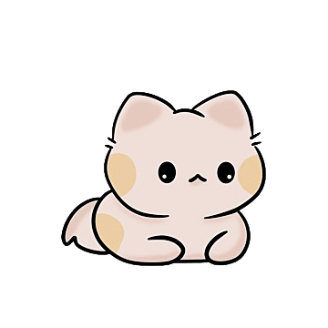
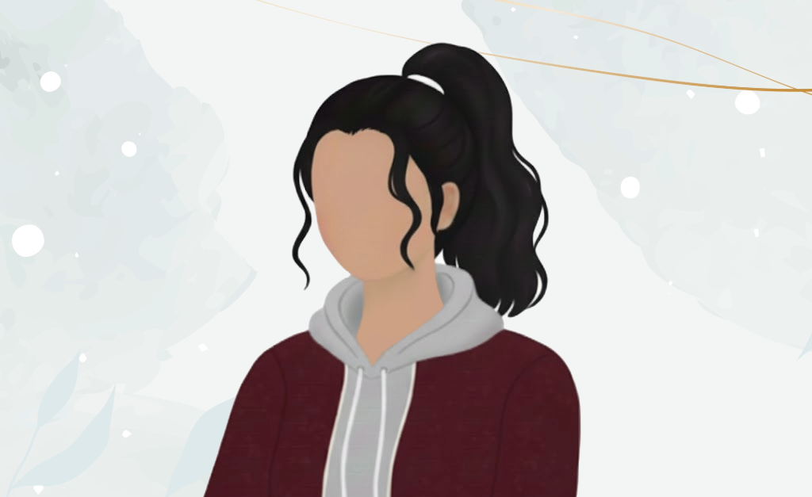

Hi, I'm Zainub Siddiqui!
I am a Computer Science student at Portland State University, currently interning as an Undergraduate DevOps Software Engineer. I am passionate about software development and data center technologies, and always eager to learn new things! This portfolio website shares my projects, experiences, and journey in tech.
